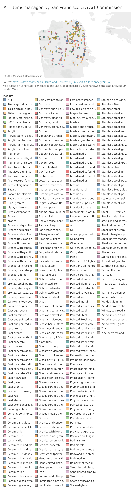

Prototype in Tableau
Encoding:
In this map visualization, each symbol on the map is an art item. Color is the medium of that art as shown in the legend.
Potential wrangling:
Since there are many mediums in the raw data, and there are actually groups of same mediums with slight different details, in the future the data could be merged into same large categories of mediums. For example, all the bronze, or all of the steel items could be merged into one larger "bronze" or "steel" group, and further filtering option could help for the subgroups.
Potential interactivities:
The symbols on the map could be designed as hovering by and show details such as artist, display titles, creation date and more.
There could also be filtering options provided on the website, like by artist, by display, by creation date, or by medium. Then the user could look for art items conditionally.
Potential possibilities of other graphs:
There could be another graph according to the user's choice, so that the information of creation date could be applied in a time plot, maybe in a heatmap.
As there are relationship of group and subgroup in the column of medium, there is also possibility of making a hierarchy graph. (For example metal -> Steel ->Painted Steel, etc.)